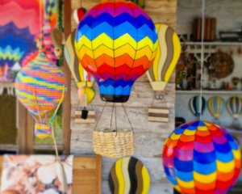
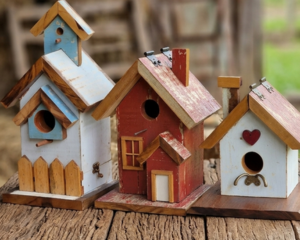
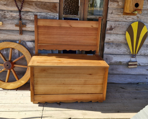

Souvenirs
Lembranças com designs que remetem aos balões e canyons.
Trabalhamos para garantir a exclusividade de cada item em nossa loja. Conheça os principais produtos produzidas pela Madeira Velha:

Lembranças com designs que remetem aos balões e canyons.

Amplo sucesso de vendas, perfeitas para dar vida ao seu quintal ou sacada.
Peças exclusivas assinadas por artesões locais.

Peças ideais para transformar qualquer ambiente.
Clique abaixo e fale diretamente com o nosso atendimento via WhatsApp para reservar produtos para a data de sua chegada!
Reservar ou Encomendar via WhatsApp